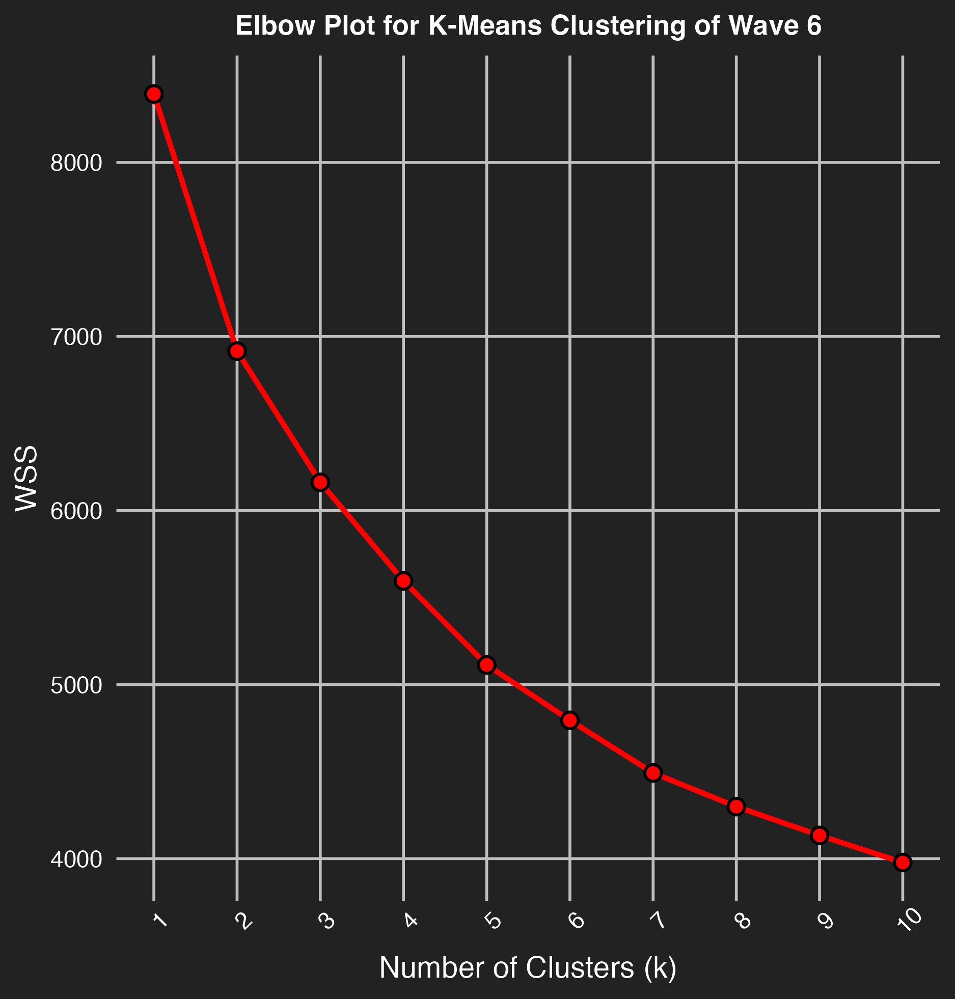

Did China Drive Its Own Image Problem? Analyzing Events and Filipino Public Opinion
The GitHub repository for this project can be found at https://github.com/zeinolf/GVPT628_FinalProject.
Introduction
In recent years, conflict between the Philippines and China in the South China Sea has emerged as the world’s most consequential maritime dispute. The conflict, largely centered on overlapping claims on islands, reefs, and resource-rich waters such as the Scarborough Shoal and Second Thomas Shoal, has pitted the governments, militarys, and even civilians of both East Asian nations against one another. China, under the guise of their expansive “Nine-Dash Line” policy1, has claimed maritime rights far into the southeastern most portions of the South China Sea. The Philippines, in contest to China’s claims, established the “Exclusive Economic Zone”2, which formalized the Philippines’ rights to those same waters at an international scale. Such overlapping disputes have ultimately led to numerous standoffs between the Chinese Navy/Coast Guard and Philippines Navy/Coast Guard. Likewise, Filipino fisherman who use the water have also found themselves under duress from Chinese Coast Guard water cannons, sirens, and even boat rammings3.
Given these heightened tensions, one may ask the true effect that these events have had on Filipino public opinion of China. While these confrontations, maritime incidents, and diplomatic disputes receive significant media and political attention, it remains unclear whether such developments have meaningfully altered how Filipinos perceive China. Historically, China and the Philippines have a long history of interaction dating back to pre-colonial trade4, but in the modern era, this relationship has become much more complicated. Specifically, the Philippines’ longstanding alliance with the United States has strained this relationship. As a formal ally of the U.S., the Philippines is embedded within a broader strategic framework that labels China as a competitor and security threat. As an example, the United States houses nine “Enhanced Defense Cooperation Agreement” (EDCA) military bases in the Philippines5, which largely exist to thwart China’s expansion in the region and curtail activity in the Indo-Pacific. As a result, the Philippines finds itself in between two world super powers that greatly desire access to and cooperation with the Philippines
By examining changes in China-related attitudes across four Asian Barometer Survey waves administered in the Philippines, this project assesses the extent to which shifts in Filipino public opinion align with changes in the broader China–Philippines geopolitical environment. Leveraging quantitative data science methods, including principal component analysis and k-means clustering, this analysis evaluates whether Filipino public perceptions of China evolves in step with periods of heightened tensions, or if they remain largely independent of these dynamics. The project ultimately asks whether Filipino attitudes toward China meaningfully reflect changes in the regional security landscape, or whether public opinion is shaped by more stable and persistent underlying beliefs.
Methodology
Data
Armed Conflict Location & Event Data (ACLED) Project
ACLED6 (Armed Conflict Location & Event Data) is a United States-based non-profit organization dedicated to monitoring global conflict and crisis trends. They collect real-time data on violence and demonstrations by triaging wide ranges of publicly available information (PAI) (including local news, national news, etc.) for synthesis into distinct events. With each event, they document variables such as actors, fatality estimates, locations, event-types, dates, and more. For an example of the types of events that ACLED collects, see Figure 1. Event-types are classified using strict definition-based inclusion criteria. To this date, ACLED is one of the most robust conflict-data collection projects, and is widely recognized as a reputable and reliable data source.
Figure 1. ACLED-compiled conflict events in The Philippines over past month (as of December 12, 2025)

Conflict data from the ACLED repository can be viewed on their online dashboard tool for basic analysis as seen above. However, a look into conflict data from further back in time requires an API access token. This project specifically utilized the ACLED API in conjunction with the “acled.api” package in R to obtain conflict data for The Philippines and China. For more information regarding API access, see API Documentation.
For The Philippines, ACLED collection begins as far back as January 1, 2016. Likewise, ACLED collection on China began on January 1, 2018. To answer the research question, all ACLED event data that occurred in The Philippines and China from their respective starting collection date until October 11, 2021 was pulled via the ACLED API. This specific end date was chosen in order to line up directly with the last day of administered surveying for the Asian Barometer Wave 6 questionnaire. Data from each respective API query was subsequently cleaned and reformatted for easier use. Variables kept included ‘event_date’, ‘actor’, ‘location’, ‘event_type’, ‘disorder_type’, and ‘fatalities’, among others. The Philippines data was specifically filtered for event notes or actors that contained mentions to “china”, “chinese”, “south china sea”, or “islands”. Likewise, the China data was specifically filtered for event notes or actors that contained mentions to “philippines”, “filipino”, “south china sea”, or “islands”. For China, only ‘strategic development’ events were selected, as protest-data would have come from Chinese civilians rather than the desired Filipino civilians; including strategic developments still allows for the maritime disputes that this project is looking to capture. After reduction, the data was bound together and written into a SQLite database. This final database ultimately contained 73 distinct events that involved some level of conflict between Filipino and Chinese actors from 2016-2021.
The code that what used to pull the data from the ACLED API for this project can be found here. The specific data that was stored using this API pull for use in this report can be found here.
Asian Barometer Survey
The Asian Barometer Survey7 (ABS) is a public opinion survey project that captures the general attitudes of individuals living across Asia. Ultimately, the project aims to generate a region-wide base of scientifically reliable public opinion data on issues such as political values, democracy, the economy, etc. It was first established in 1971 by Fu Hu, Professor Emeritus of the Department of Political Science at National Taiwan University and Academician of Academia Sinica8. It is now housed at the Fu Hu Center for East Asia Studies and works in collaboration with other notable “barometer” organizations around the world. Six waves of polling have occurred since 2001, with the organization currently administering its seventh wave as of late 2025.
Although the ABS project does not have a working API, they allow researchers and scholars to download their data at request. The data release form can be found here. This individual project specifically utilized data from Waves 3 (2011), Wave 4 (2015), Wave 5 (2018), and Wave 6 (2021) of the ABS Philippines survey. Waves 1 (2005) and Wave 2 (2008) were excluded as questions regarding attitudes towards China were not introduced until Wave 3. Each wave contains a sample of 1,200 Filipino respondents that are collectively statistically representative of the entire population of the Philippines.
After each wave was read into R, a specific set of variables/questions were sub-selected for analysis. These included demographics such as gender, education, locality type, and age, as well as attitude-related variables (“psychographics”) that asked respondents questions related to their attitudes on China. Each wave required certain variables to be recoded and/or rescaled, as question numbers and scales often changed from wave to wave. Once reformatted, each sub-selected and cleaned wave dataset was written into a SQLite database for replicability purposes. All waves were then bound together and further cleaned to recode non-response answers (e.g., “I don’t know”, “Refused to answer”, etc.) as N/A values. With four different waves of 1,200 respondent data points, the final cleaned ABS data file contained 4,800 rows of responses across 20 variables (that also include more administrative variables such as an identification number). This final ABS dataset was then written into a SQLite database for use in this report.
All raw ABS wave files and questionnaires can be found in the “W” folders here. The code that was used to load and clean the ABS data for this project can be found here. The resulting data files for the cleaned ABS data that were used for use in this report can be found here.
Analysis Methods
K-Means Clustering
K-means analysis was utilized in order to identify latent public opinion groupings on China- and Asia-related attitudes across the four chosen ABS waves. For each wave, survey data was cleaned to remove non-responses and filtered down to a hand full of attitudinal variables that capture perceptions on China’s importance, influence, harm, and government structure, among others. Missing values were imputed using k-nearest neighbors, and all variables were scaled prior to clustering. K-means clustering was then applied separately to each wave, with the number of clusters determined through elbow plot diagnostics. See Figure 2 for an example elbow plot generated for this project. All four elbow plots showed an elbow hitch at k=2, and therefore each iteration utilized a center of k=2 in order to allow more comparability across waves. Starting points for clustering were carefully chosen for each wave in order to ensure cluster consistency across each wave. Cluster memberships were then merged back into the original respondent-level datasets and stored in an SQLite database for each wave. After some additional final cleaning to remove lingering N/A values, the wave-specific datasets were combined into a single pooled file and written into a SQLite database for use within this report. This method ultimately produced a longitudinal dataset of clustered individuals that allow for analysis of changes in Filipino public attitudes toward China over time. The code for this methodology can be found here.
Figure 2. ABS Wave 6 K-Means Clustering Elbow Plot

Principal Component Analysis
To further characterize the structure underlying these attitudinal clusters, principal components analysis (PCA) was performed on the clustered Asian Barometer data using a subset of standardized demographic and attitudinal variables. The resulting component scores were then merged back into the respondent-level data and stored for subsequent analysis. The code for this methodology can be found here.
Analysis
ACLED Event Trends
Figure 3 displays trends in ACLED-recorded events in the Philippines that explicitly reference China or Chinese actors disaggregated by the event types of ‘protests’ and ‘strategic developments’. This plot also includes ACLED-recorded strategic development events in China that referenced The Philippines or contested islands. Protests include both violent and nonviolent civilian demonstrations targeted against Chinese presence in the Philippines. Strategic developments include maritime incidents and other interstate conflicts between the Philippines and China. Prior to 2018, protest events display a fluctuating but persistent zig-zag pattern, reflecting recurring episodes of public mobilization tied both to anti-China sentiment and to broader domestic opposition to Rodrigo Duterte’s presidential administration. In 2018, the data shows a plateau of protests events characterized by similar anti-China sentiment, with many of these corresponding to Filipino Independence Day. Fluctuations prior to 2020 culminates in a peak in mid-2019 also characterized by overlapping grievances against Chinese influence and government policy. Following the onset of the COVID-19 pandemic, protest frequency expectedly drops sharply as stay at home orders and mobility restrictions are enforced due to public health concerns. From 2016 to 2019, strategic development events occur sparingly. Two of the three incidents correspond to large-scale arrests of Chinese criminal networks or illegal fishing operations in the Philippines. However, the third data point, occurring in August of 2018, is the first indication of a brewing maritime dispute between China and the Philippines. In this event, the Chinese government deployed naval vessels to uninhabited sandbars surrounding the Philippines-controlled Kota island following the sighting of Filipino fisherman in the territory.
Figure 3. ACLED Events Involving China/Philippines Government and Civilian Hostilities
While protests decline in 2020 due to the pandemic, strategic development activity rises markedly. Two spikes occur, one in mid-2020, and one in mid-2021. These events are largely made up of a numerous amount of maritime and interstate incidents involving the Chinese Navy and the Philippine Coast Guard in contested areas of the South China Sea, as well as formal policy declarations by the Chinese military that dispute the Philippines EEZ. One event note from ACLED states “On 7 March 2021, some 220 vessels believed to be manned by Chinese maritime militias were spotted by the Philippine military at the Julian Felipe Reef (Kalayaan, Palawan, Mimaropa region), an area in the disputed Sparatly Islands claimed by The Philippines to be within its Exclusive Economic Zone. The presence of the Chinese vessels was reported in the media over the weekend of 20-21 March, raising tensions in the region and leading The Philippines to file a diplomatic protest against China.” This string of events represents heightened direct state-to-state tensions rather than the typical civilian demonstrations seen prior, signaling a move from latent political disagreement to overt strategic confrontation. As mentioned, this rise in activity coincidentally occurs simultaneaouly with the pandemic, in which individuals are unable to protest against Chinese government action. As the pandemic slows in mid-2021, protest activity surges dramatically, coinciding with Philippine Independence Day and manifesting as nationwide anti-China demonstrations. The timeline of this figure ends just as Filipino respondents were surveyed for the Asian Barometer, meaning that public attitudes captured in the survey reflect exposure to the full sequence of these events.
Asia Barometer Survey Analysis
The interactive dashboard below explores how public attitudes toward China in the Philippines have evolved across each wave. It allows users to compare distributions of key China-related question responses from the ABS over time and examine how such views vary across demographic groups. These demographic facets include gender, locality level, education, and clusters (expanded on further down). Attitude variables include questions related to China’s influence on the Philippines and Asia, China’s global influence, China’s governance, whether China does more harm than good, as well as some other questions that dive into topics such as immigration, desired economic model, and way of life.
A great deal of information can be gleaned using the dashboard above. To summarize some overarching trends: attitudes toward China in the Philippines show a clear and consistent shift toward greater skepticism and concern. While earlier waves display a mix of positive evaluations of China’s influence on the country and Asia, the recent Wave 6 shows a notable increase in perceptions that China does more harm than good and exerts negative influence. At the same time, respondents increasingly acknowledged China’s growing influence on the Philippines, as China steadily overtook the United State as the perceived dominant power in Asia today and in the next decade. Despite this recognition of influence, China is rarely viewed as a preferred model for national development, even as views on China’s level of democracy improved drastically from Wave 5 to 6. Taken together, the results suggest a pattern in which Filipinos increasingly see China as powerful and influential, but also as problematic and often harmful.
In order to understand latent structures that are underlying Filipino attitudes towards China, principal component analysis was conducted on a set of attitudinal variables related to China. With this, correlated survey items can be summarized into a smaller number of components that represent distinct dimensions of evaluation. The resulting components are interpreted using the correlation matrix visualized in Figure 4, which illustrates how certain variables correlate to each of the first two identified principal components.
Figure 4. Correlation Matrix of ABS Attitude’s Principal Components

Principal component 1 (PC1) seems to captures respondents’ overall sentiment toward China. The correlation matrix in Figure 4 indicates that PC1 is strongly associated with evaluations of China’s influence and impact, exhibiting strong negative correlations with perceptions of China’s current and future influence in Asia, its degree of influence in the Philippines, and beliefs that China’s influence is harmful or negative. This indicates that lower PC1 scores correspond to perceptions of China as harmful, dominant, and negatively influential in Asia and the Philippines. Higher PC1 scores reflect somewhat more positive assessments, including slightly greater openness to China as a democratic actor or development model. While a bit trickier, principal component 2 (PC2) likely captures the lens in which respondents evaluate China. PC2 is distinguished by some moderate positive correlations with perceptions of China’s regional influence and democratic characteristics, alongside moderate negative correlations with beliefs that China causes harm, exerts negative influence, and serves as a good model for national development. This overall suggests that this component may capture differences in the way in which respondents’ evaluate China. Positive associations with regional influence and governance evaluation suggest that high PC2 respondents judge China through a broad geopolitical or institutional lens. Negative associations with harm, influence, and development preferences indicate that low PC2 respondents evaluate China primarily through its practical impact on the Philippines.
Given the evolving geopolitical tensions between China and the Philippines, it is important to examine how Filipino public opinion toward China has segmented over time. Identifying stable and changing attitude clusters across survey waves offers insight into how distinct segments of the public interpret China’s role, influence, and future trajectory in Southeast Asia. Across all four waves, a segmentation of two clusters was chosen as the best way to group respondents by attitudes towards China. A visual display of the two clusters can be seen graphed across the dataset’s first two principal components in Figure 5.
Figure 5. Respondent Principal Component by Cluster and Wave

As seen in Figure 5, it is clear that the two segments created as a result of the k-means clustering are divided by PC1. In other words, the respondent clusters are divided by their attitudes towards China; with Cluster 1 being made up of negative attitudes towards China (negative PC1) and Cluster 2 being made up of positive attitudes towards China (positive PC1). The difference between the clusters on PC2, on the other hand, is not as explicit. The plot suggests that respondents in Cluster 2 are slightly more likely to have positive PC2 scores, meaning that they view China through a broad geopolitical or global lens. Likewise, those in Cluster 1 are slightly more likely to have a negative PC2 score, meaning that they view China through a more regional or practical lens of. Outside of those slide patterns, however, both clusters are evenly split across the y-axis (PC2).
With principal components computed, it becomes easier to gauge attitudes towards China without needing to break the data down by each distinct variable. That is, we can utilize PC1 as a measure of attitude toward China, with positive PC1 indicating positive feelings toward China and negative PC1 indicating negative feelings towards China. The following interactive dashboard displays how PC1 changes across specific demographic indicators.
Younger respondents have notably higher PC1 scores than older cohorts, with values declining steadily and becoming most negative among those aged 65+. This suggests that younger respondents are more likely to be supportive of China, with older respondents less supportive. Regionally, Manila NCR stands out as clearly positive (more pro-China) , while Luzon and Visayas are negative (anti-China) and Mindanao is closer to neutral. Locality shows a non-linear effect: respondents in megacities and rural areas score positively, while those in mid-sized cities and small towns are more negative. Gender differences are small and largely overlapping, while education shows a pattern in which more positive PC1 values among respondents align with vocational or university exposure while more negative values align more with those with less formal education.
Discussion
These results overall suggest that Filipino public opinion toward China has shifted in ways that only partially reflect an uptick of disputes between China and The Philippines. From 2010 to 2021, public opinion towards China has become more skeptical overall as China has grown more influential in the region. One specific insight is that in 2018, Filipino respondents showed more ambivalent or even supportive views towards China compared to that of 2015. However, after the maritime incidents occurred in 2021 and Filipinos were subsequently polled, the previous increasingly negative trend towards opinion on China returned. A rise in anti-China attitudes alligned with an increase in maritime confrontations that were observed within the ACLED data. Such changes in public opinion are also corroborated by the increasing number of anti-China protests that occurred over time. Important to note, however, is that the relationship between geopolitical events and public opinion is likely not one-to-one, as attitudes were already shifting gradually over time. This may suggest that variables other than an uptick in conflicts, such as shifting and evolving media narratives, could also have been an important driving force on public opinion.
The principal component analysis performed in this project supports the latter-mentioned conclusion, as it revealed a stable, underlying structure of China-related attitudes across time. PC1 consistently captured a broad dimension that seperated respondents with generally negative views of China from those with more positive attitudes. The continued persistance of this dimension across waves all four survey waves suggests that public opinion toward China is anchored in durable belief systems, rather than short-term reactions to events. K-means clustering also further supports this conclusion, as respondents consistently sorted well into two attitudinal groups distinguished primarily by their overall sentiment toward China. While the size and make-ups of these clusters changed slightly over time, their core difference of PC1 remained intact. This would overall suggest that the maritime incidients may only intensify existing attitudes, rather than fundamentally change them.
Variation in PC1 across different demographic indicators like age group and region suggests that one’s exposure to geopolitical tensions such as the maritime disputes still matter overall. As an example, respondents that live in the Manila National Capital Region (NCR) tend to express more favorable views towards China than respondents living in regions more proximate to contested waters and U.S. Enhanced Defense Cooperation Agreement (EDCA) military bases (Luzon & Visayas). This regional pattern underscores how geography and proximity to conflict, among other demographic indicators, shapes the interpretive lens through which China is viewed.
Although the time period for this analysis concludes in 2021, an easy way to validate the conclusion that negative opinion on China is growing is by looking at post-2021 presidential election results. From 2016 to 2022, a pro-China and anti-U.S. hardliner named Rodrigo Duterte was president of the Philippines9. His 2016 election coincided with more ambivalent and supportive attitudes towards China, as seen in the ABS 2015 Wave 5 results. However, in post-2021, where we see maritime incidents start to occur and public sentiment towards China decline, Duterte’s opposition led by Ferdinand “Bongbong” Marcos wins the presidential election10. President Marcos, a devout critic of Duterte, ran on a campaign aimed at working closer with the United States and rivaling China11. The fact that Marcos won the election over Duterte, who was a widely popular candidate, indicates that this project’s conclusions that anti-China public sentiment had been rising was correct.
In conclusion, this project’s findings suggest that an uptick in geopolitical maritime tensions between China and the Philippines is just one part of a larger story of Filipino public opinion towards China. While attitudes did seem to react directly to the maritime confrontations in mid 2021, a broader trend of increasing skepticism and anti-China sentiment had already been taking shape across earlier survey waves. This pattern indicates that public opinion is influenced not only by episodes of conflict, but also by longer-term narratives surrounding China’s growing influence, perceived threats to sovereignty, and general shifting power dynamics in Asia. Overall, maritime disputes and conflicts reinforce and intensify existing attitudes rather than independently generate broad changes in how Filipinos view China.
Limitations & Possible Next Steps
This project’s analysis faces some limitations mostly related to the availability of data. Most notably, the Asian Barometer Survey has not yet released a wave for the Philippines after 2021, which prevents direct measurement of Filipino public opinion during the 2021 to 2025 time period. This is an important period, as this is when China–Philippines strategic and maritime developments have been the most frequent and consequential. As a result, the analysis cannot directly evaluate whether the escalation of strategic events during this time directly corresponded with meaningful shifts in public attitudes. In the future, including Wave 7 and additional ACLED data would help bolster this project. The lack of time-aligned and granular data also makes it difficult to draw a direct comparison between the volume of strategic events and changes in public opinion. For sake of time, the k-means clustering was also conducted using only a limited set of China-related survey variables, which restricts the complexity of the attitudinal patterns that can be identified and may oversimplify public opinion. Consequently, the clustering results should be interpreted as exploratory and illustrative rather than as a comprehensive mapping of Filipino attitudes toward China. Future work on this project would benefit from an expanded set of variables used for k-means clustering. Lastly, this project originally intended to conduct web-scraping and sentiment analysis on Filipino media coverage towards China over time. Unfortunately, due to Cloudfare and firewall issues, it was unable to be completed. Completion of sentiment analysis would significantly bolster this project’s conclusion that other factors such as media narratives are likely the main driving force in changing public opinion.
Footnotes
Institute for China–America Studies, “Map Spotlight: The Nine-Dash Line,” accessed December 14, 2025, https://chinaus-icas.org/research/map-spotlight-nine-dash-line/↩︎
Iñigo de la Cruz, “Maritime Entitlements in the South China Sea: Implications for the Philippines,” Loyola University Chicago International Law Review 21, no. 1 (2023), https://lawecommons.luc.edu/lucilr/vol21/iss1/4/↩︎
Associated Press, “Philippines Accuses China of Harassing Its Forces Near Thitu Island,” AP News, March 2024, https://apnews.com/article/south-china-sea-thitu-island-philippines-7dfa0e6533236d442271176695039a6d↩︎
Renato Cruz De Castro, “The Philippine–China Connection from the Precolonial Period to the Post–Cold War Era: An Assessment,” in Connecting and Distancing, Cambridge University Press, accessed December 14, 2025, https://www.cambridge.org/core/books/abs/connecting-and-distancing/philippinechina-connection-from-precolonial-period-to-postcold-war-era-an-assessment/B6003D7DB6DC03ADDE628D7EFF94FE14↩︎
U.S. Department of State, “U.S. Security Cooperation with the Philippines,” accessed December 14, 2025, https://www.state.gov/u-s-security-cooperation-with-the-philippines↩︎
Armed Conflict Location & Event Data Project (ACLED), “About ACLED,” accessed December 14, 2025, https://acleddata.com/↩︎
Asian Barometer Survey, “About Asian Barometer,” accessed December 14, 2025, https://asianbarometer.org/↩︎
Asian Barometer Survey, “Briefing Series: Wave 6,” accessed December 14, 2025, https://asianbarometer.org/brief.html?page=b20↩︎
CNN Philippines, “Official Count: Duterte Wins Presidency, Robredo Vice President,” May 27, 2016, archived December 25, 2018, https://web.archive.org/web/20181225131751/http://cnnphilippines.com/news/2016/05/27/official-count-duterte-president-robredo-vp.html↩︎
Inquirer.net, “It’s Official: Bongbong Marcos Sworn In as PH’s 17th President,” June 30, 2022, https://newsinfo.inquirer.net/1619425/its-official-bongbong-marcos-sworn-in-as-phs-17th-president↩︎
Congressional Research Service, “The Philippines: Background and U.S. Relations,” CRS Insight IN11954, updated 2024, https://www.congress.gov/crs_external_products/IN/PDF/IN11954/IN11954.5.pdf↩︎